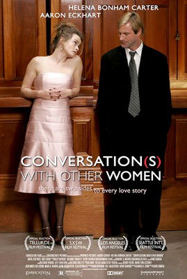

#1175 Conversation(s) with Other Women - Jede Liebe hat zwei Seiten
Alternativ: Conversations with Other Women
 
 IMDB-Wertung: 7.1 / 10
IMDB-Wertung: 7.1 / 10  Metascore: 62
Metascore: 62 
A man runs into a woman at a wedding. They start to flirt and talk and find that they get along. Throughout their discussion, the man talks about certain memories as if they were common to the two of them. We gradually learn that there may have been a previous connection between these two when they were younger. This just leaves more questions as their past is slowly revealed.
Jahr: 2005
Dauer: 84 Minuten
FSK:
Land: England Studio: Edel Media & EntertainmentTonspuren: DD5.1 - ,
Untertitel:
Auflösung: 1080p (1920x1080) Größe: 4085 MB
Genre: Komödie, Drama, Liebe
Regisseur: Hans Canosa
Drehbuch: Gabrielle Zevin
Soundtrack: Jeff Eden Fair, Starr Parodi
Darsteller:
 Aaron Eckhart als Man
Aaron Eckhart als Man Helena Bonham Carter als Woman
Helena Bonham Carter als Woman- Yury Tsykun als Bartender at Wedding
 Brian Geraghty als Groom
Brian Geraghty als Groom Brianna Brown als Bride
Brianna Brown als Bride Thomas Lennon als Videographer
Thomas Lennon als Videographer- Erik Eidem als Young Man
- Nora Zehetner als Young Woman
- David Franklin als Bartender in Bar
 Olivia Wilde als Bridesmaid
Olivia Wilde als Bridesmaid- Cerina Vincent als Sarah the Dancer
- Rozanne Sher als Girl on Street
- Veronica Reyes-How als Girl on Street
- Emily Fernandez als Girl on Street
- Will Carter als Wedding DJ , uncredited
 Madison Davenport als British Girl , uncredited
Madison Davenport als British Girl , uncredited- Harrison Held als Groomsman , uncredited
- Philip Littell als Jeffrey the Cardiologist
- Hadley Dion als Gwen, Daughter , uncredited
- Jennifer Herzog als Girl on Street , uncredited
- Kendra Liedle als Girl On Street , uncredited
Datei: X:\2005(A-F)\Conversation(s) with Other Women - Jede Liebe hat zwei Seiten (2005, FSK, 1920x1080).mkv seit 29.05.2015
Festplatte: HD 2003-2004-2005(A-F)
 Es gibt insgesamt 49 Filme in der Gruppe '2005(A-F)'
Es gibt insgesamt 49 Filme in der Gruppe '2005(A-F)'